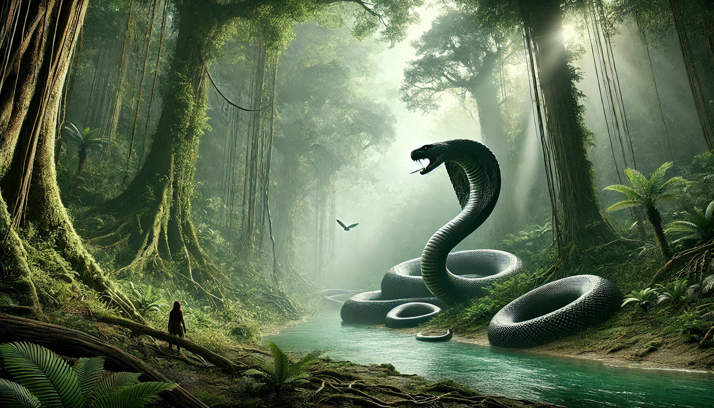

Meet Vasuki Indicus: The Ultimate Giant of Serpents |
|
Introduction to Vasuki Indicus
Vasuki Indicus is more than a mythical name—it’s believed to be
the largest snake that ever existed on Earth. Ancient texts and
some fossil records hint at the remarkable size of this snake,
suggesting it may have reached lengths unimaginable by today’s standards.
Named after the revered snake deity Vasuki in Hindu mythology,
Vasuki Indicus stands as a symbol of both awe and power, capturing
the imagination of those who learn of its existence. Known to be far
larger than any modern-day snake, Vasuki Indicus reminds us of a time
when colossal creatures roamed freely, shaping the planet’s prehistoric ecosystem.
|
 |
|  |
Natural Habitat and Prehistoric Presence
Thought to have lived millions of years ago, Vasuki Indicus
would have thrived in dense, tropical landscapes, possibly lurking
in deep river systems or ancient rainforests. Its immense size
suggests that it could take down prey as large as today’s crocodiles,
with a powerful muscular structure capable of constricting and overpowering
almost any creature it encountered. As with other ancient reptiles, the remains
of Vasuki Indicus have been rare and elusive, but the legends surrounding this
serpent continue to fuel interest and speculation among scientists and enthusiasts alike.
|
|
Vasuki Indicus vs. Titanoboa: A Clash of Giants
While Titanoboa, a giant prehistoric snake, holds the title in modern science
as one of the largest snakes known to date, Vasuki Indicus is said to surpass
even this record-holder. Titanoboa, which grew up to 42 feet and lived in South
American swamps around 60 million years ago, is one of the closest real-world
counterparts to Vasuki Indicus. However, Vasuki’s mythical and fossil record
dimensions suggest it may have been even longer and more powerful, creating a
lasting legacy in ancient lore. While Titanoboa is a known, studied species,
Vasuki Indicus bridges the gap between fact and legend, with some evidence
suggesting it may have been a true apex predator, dominating its environment
in a way that no other snake has before or since. |
|
|